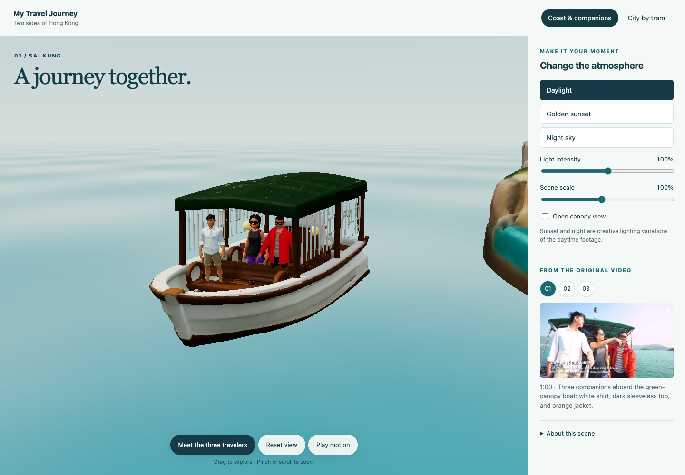
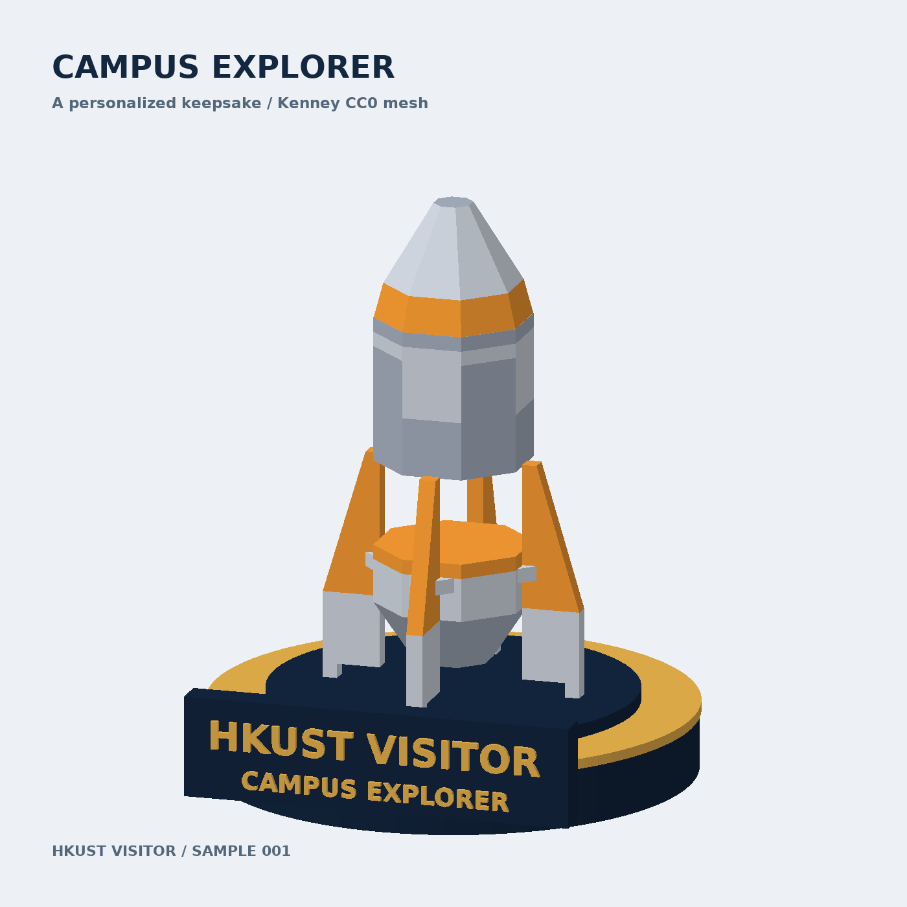
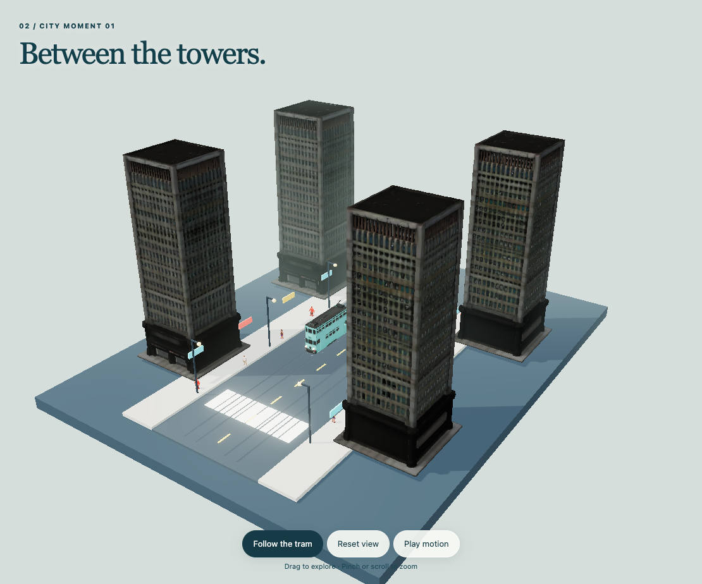
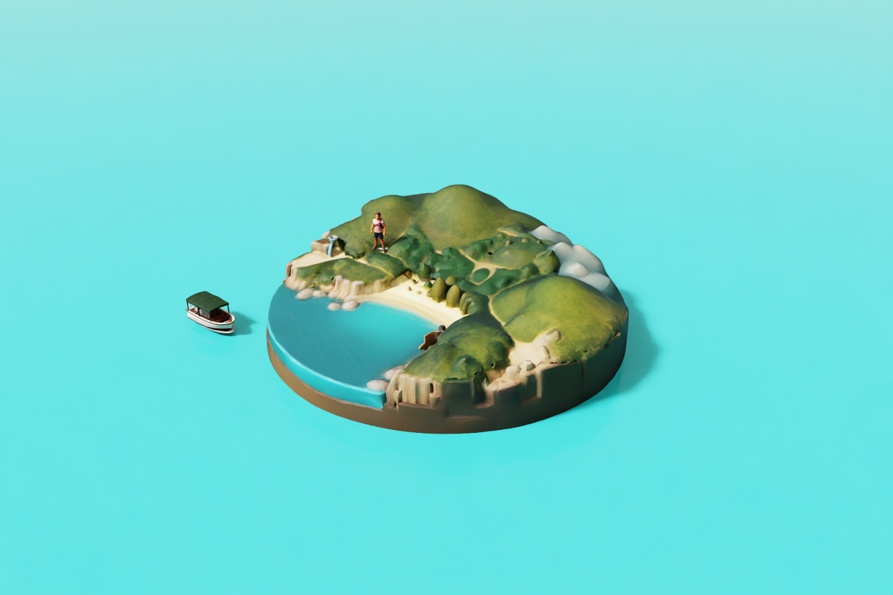
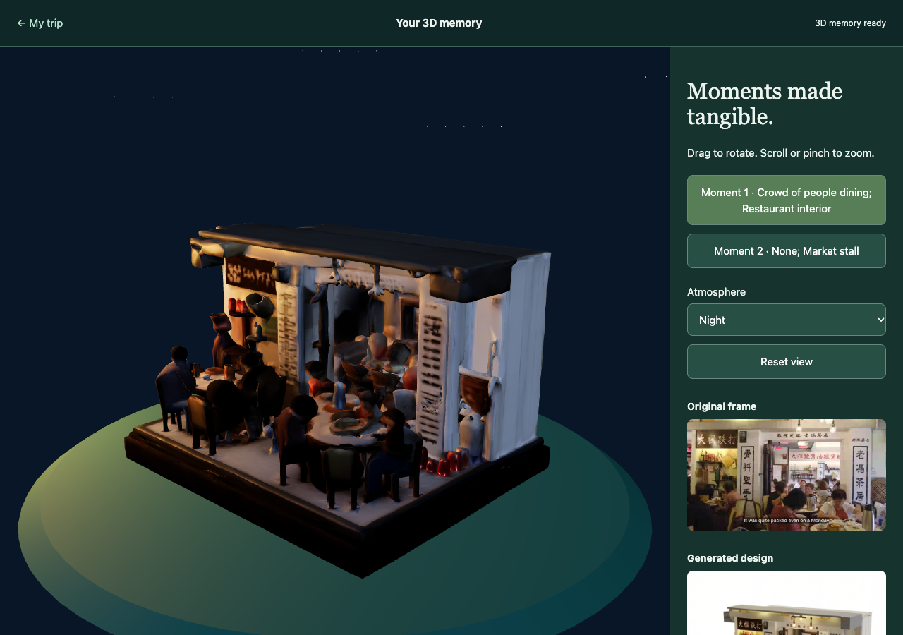
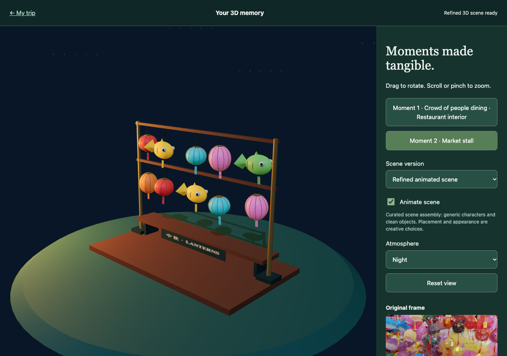

DGX Spark Agent Skills 黑客松 · 参赛历程记录
我们的交互式三维
旅行回忆开发历程
团队成员｜Gamage Nanayakkara Dinusara Sasindu · 范笑朧 · 莫宸尔
由旅行者选择回忆、核对原始画面，再探索生成的场景。

01 · 初衷
让回忆成为可以再次进入的空间
旅行结束后，照片和视频还在，重新走进那段时光的机会却很少。视频记录了同行的人与事件顺序，却常被留在相册里；单张照片又难以呈现空间关系。My Travel Journey 由此出发：从旅行视频中找出用户真正重视的片段，把它们变成能够旋转、探索并随时对照原始画面的三维回忆。
参加 DGX Spark Agent Skills 黑客松，让这个想法有了具体的开发方向。我们从个性化数字纪念品实验逐步走向以视频证据为依据的可交互场景，把“生成一个模型”扩展为“理解旅行者想留下什么，并让旅行者确认”。项目现名为 My Travel Journey，早期代码沿用 MemGen 仓库名称。
在当前的公开演示中，世界地图连接西贡海岸和香港电车两组场景。用户可以跟随小船、切换城市片段，也能改变光照氛围。它们是经过整理的示例，地图上的其他样例地点并不代表已经生成的旅行作品。
我们的目标，是让回忆拥有一个可以再次进入的空间。

02 · 开发历程
从一件纪念品，到一段可以进入的旅程
验证交付
我们先用 CC0 网格制作“Campus Explorer”火箭模型，在底座加入访客名称，再导出 GLB 并放进浏览器。它验证了几何组装、个性化文字、导出与交付，却尚未分析照片或视频，也不是生成式模型的结果。
认识视角的限制
随后，我们从视频画面估计深度，把纹理投影到表面，再通过 Omniverse 组装和渲染。接近原始视角时效果较好，但转到侧面后，拉伸伪影与背面几何的缺失十分明显。
生成微缩回忆
路线逐渐转向依据素材生成风格化微缩场景：先选择回忆，再进行图像风格化与纹理网格生成。原始片段始终保留在场景旁边。
连接个人素材
最后，我们把入口扩展到个人视频和照片。上传、填写关注点、查看候选片段、确认选择，再启动生成，形成了可实际运行的端到端流程。

最初的想法
一件可以带走的数字纪念品
这个早期原型让我们确认，三维模型可以个性化、导出并在浏览器里交付。它也暴露了故事上的缺口：替换名称和装饰并不能说明一段旅行里有哪些人、哪些时刻真正重要。这个问题推动项目转向从视频证据出发的回忆生成。

香港电车示例
同一段旅程，不同的城市片段
选择不同的视频时刻，生成的街区也随之改变。电车、来源片段和场景说明把创作结果重新连接到真实旅程。
03 · 方法
模型各司其职，用户确认连接理解与生成
旅程意图理解
本地 Qwen3.6-27B 把旅行者的原话整理成可追溯需求，区分要保留的人物、时刻和细节，也区分原片事实与创意要求。它负责理解意图，不负责图像风格化或三维建模。
视频证据选择
系统对视频抽帧；Qwen3.6-27B 分析画面，结合相关性与去重检查提出最多三个候选时刻，并给出时间戳、选择理由和不确定项。用户查看原始画面后决定保留哪些回忆。
- 视频抽帧
- Qwen3.6-27B 理解与选证
- 用户确认
- Qwen-Image-Edit-2511 风格编辑
- TRELLIS.2-4B 生成 GLB
- Three.js 探索
用户确认后，Qwen-Image-Edit-2511 把获选原帧编辑为风格统一的微缩设计参考；TRELLIS.2-4B 再将每张参考图转换为 512 分辨率的带纹理 GLB 网格。不可见的背面由模型推断，因此生成结果是对素材的三维诠释，不是精确扫描。模型在我们远程使用的 DGX Spark 上本地运行。
Three.js 浏览器负责加载 GLB，提供旋转、缩放、光照与来源对照。整理好的风景示例另经 Omniverse Kit 组装为 OpenUSD 场景，加入变换、动画和灯光，并渲染 RTX 预览；个人上传流程目前不经过 Omniverse。Qwen 与 TRELLIS.2 均为现有上游模型，我们的工作集中在两项 Agent Skills、流程连接和交互体验。

04 · 挑战与成果
小船上的旅伴，改变了我们的检查方式
最令我们反思的一次经历，是小船生成出来了，重要的旅伴却没有被完整保留。场景在视觉上呈现为一次旅行，并不意味着它真正保留了用户所珍视的回忆。我们重新对照原始画面，将三位旅伴作为独立资产补入示例，并继续检查他们在浏览器中的呈现。
这也推动我们把需求和证据显式记录下来：画面是否支持某个人物或地点，不能仅凭模型输出的高置信度。无法核实的身份保持未确定，创作性的布局和光照则明确标注，避免把艺术呈现当成精确复原。
一次真实上传视频的测试产生了三个候选时刻，用户确认其中两个，随后得到聚餐和灯笼展示的纹理微缩模型。该次三维生成耗时十四分十四秒，包含模型启动；它是单次运行记录，不代表所有素材的速度。
演示还增加了人工整理的餐厅人物动画和灯笼摆动。这些细化提升了观看体验，但不是任意视频都能自动获得的功能，也不是自动修复成功的证据。


05 · 收获与下一步
让旅行者决定，哪些回忆值得留下
这次参赛让我们重新理解“完成一个作品”：除了能生成结果，还要能解释结果从哪里来、哪些部分经过创作，以及用户如何作出选择。原始画面与生成场景并排展示，使这件事变得直观。
我们也学会了如实描述性能。开发记录里，从首次分析到生成结束共七十五分二十四秒，其中包含失败、修复、实现和等待用户确认的时间。若将其直接报告为模型推理耗时，则会掩盖真实的开发过程。稳定性和可恢复性同样值得记录。
目前，模型中不可见的背面几何仍依赖推断生成，人物身份与场景细节可能发生偏差；示例布局和部分动画需要人工整理。项目尚未进行模型微调，也没有实现运行时多智能体协作或通用的自动场景修复。
下一步，我们希望在更多旅行素材上检查需求覆盖与画面一致性，完善有边界的检查和修复流程，再逐步改进分享与持续编辑。我们希望保留下来的，是由旅行者自己确认、能够回看依据的回忆。
参赛材料
下载完整征文
项目入口与素材说明
西贡原片：The Travel Intern，Hong Kong Outdoor Adventure。香港电车原片：michaelinlondon，Hong Kong Trams, September 2009，CC BY 3.0。个人上传结果图取自项目测试记录；细化人物使用 Quaternius CC0 资产。
Qwen 与 TRELLIS.2 为上游模型；NVIDIA 技术在本项目中包括 DGX Spark 和风景示例的 Omniverse。项目不是 NVIDIA 官方产品。